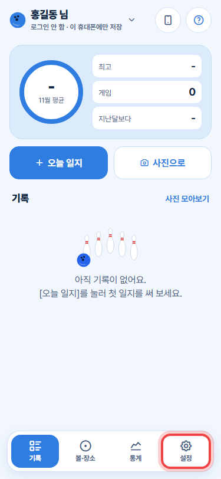
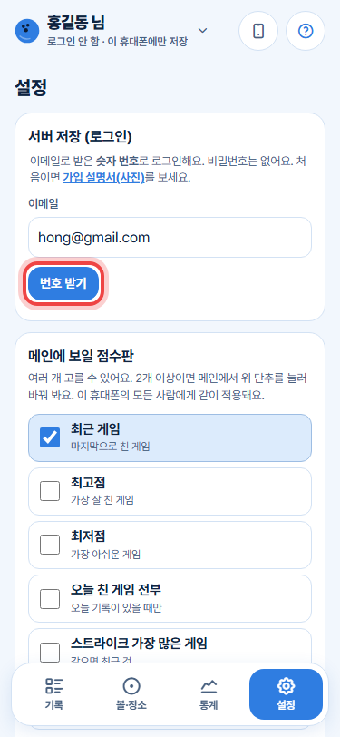
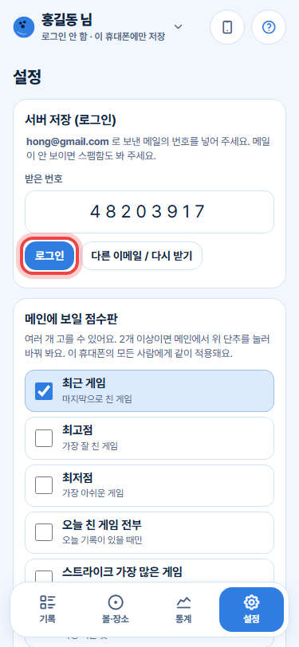
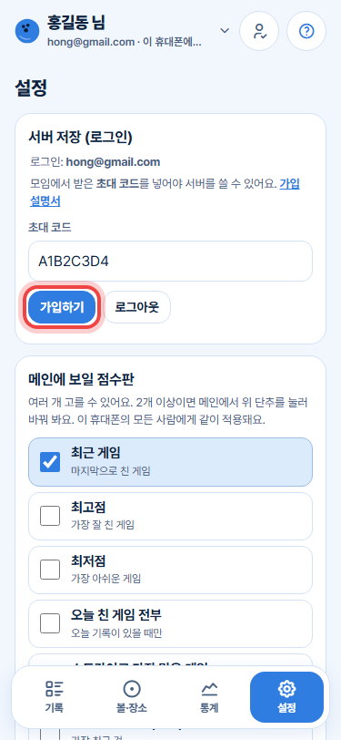
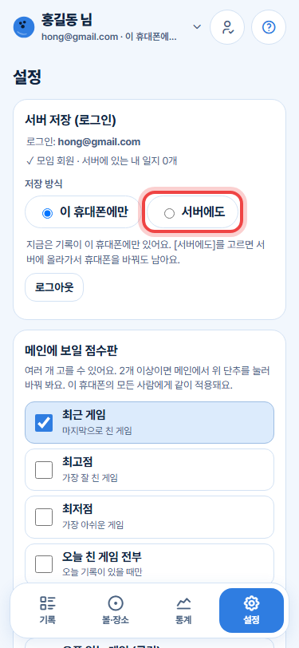
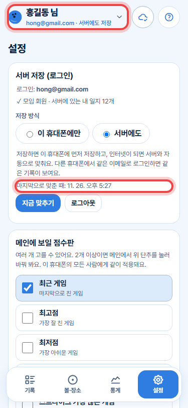
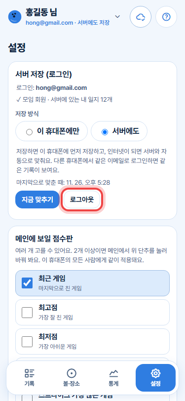

준비할 것 3가지
- 휴대폰볼링 연습일지 앱(주소)을 연 휴대폰
- 이메일 주소지금 메일을 열어 볼 수 있는 주소 (네이버·지메일·다음 다 돼요). 비밀번호는 필요 없어요.
- 초대 코드모임 단톡방에서 받은 영어·숫자 8자리 (예: A1B2C3D4)
1앱 열기
휴대폰에서 아래 주소를 눌러 앱을 열어요.
https://sunboys20.github.io/bowling-diary/홈 화면에 아이콘을 만들어 두면 다음부터 편해요.
2[설정] 누르기
화면 맨 아래 오른쪽 설정을 눌러요.
처음이면 "누가 쓰나요?"가 먼저 나올 수 있어요. 아무 이름이나 누른 뒤 설정으로 가면 돼요. (이름은 나중에 바꿀 수 있어요)

3이메일 쓰고 [번호 받기]
설정 맨 위 서버 저장 칸에 내 이메일을 쓰고 번호 받기를 눌러요.
"메일을 보냈어요"가 잠깐 뜨고, 번호 넣는 칸이 나와요. 앱은 그대로 두고 다음으로 가요.

4메일함에서 번호 보기
휴대폰의 메일 앱(네이버 메일, Gmail 등)을 열어 방금 온 메일을 봐요.
- 메일 안에 숫자 번호(예: 48203917)가 있어요. 이 숫자를 기억하거나 길게 눌러 복사해요.
- 메일 안의 링크나 단추는 누르지 마세요. 번호만 쓰면 돼요.
- 1~2분 기다려도 없으면 스팸함(정크메일)을 봐요.
5번호 넣고 [로그인]
앱으로 돌아와 받은 번호 칸에 숫자를 넣고 로그인을 눌러요.
번호가 안 맞다고 나오면 다른 이메일 / 다시 받기를 눌러 3번부터 다시 해요.

6초대 코드 넣고 [가입하기]
모임에서 받은 초대 코드를 넣고 가입하기를 눌러요.
대문자·소문자는 상관없어요. 처음 한 번만 해요. 다음부터는 이 칸이 안 나와요.

7[서버에도] 누르기
"✓ 모임 회원"이 보이면, 저장 방식에서 서버에도를 눌러요.
"이 휴대폰 기록을 서버로 올릴까요?"가 나오면 확인을 눌러요. 처음 쓰는 휴대폰이면 이 질문 없이 바로 돼요.

8끝! 이렇게 보이면 성공
맨 위 이름 아래에 내 이메일 · 서버에도 저장이 보이면 가입 끝이에요.
이제 일지를 저장하면 휴대폰에 먼저 저장되고, 인터넷이 되면 저절로 서버에도 올라가요. 따로 누를 건 없어요.

9다른 휴대폰·컴퓨터에서도 보려면
그 기기에서 앱 주소를 열고 2 → 3 → 4 → 5 → 7번만 해요. (초대 코드는 다시 안 물어요)
같은 이메일로 로그인해야 같은 기록이 보여요.
10로그아웃 (필요할 때만)
평소에는 로그아웃할 필요 없어요. 남의 휴대폰·회사 컴퓨터처럼 같이 쓰는 기기에서 썼다면 로그아웃을 누르고,
"이 기기에 남은 기록과 AI 키도 지울까요?"에서 확인을 눌러요. 서버의 기록은 지워지지 않아요.

잘 안 될 때
메일이 안 와요
- 1~2분 기다린 뒤 스팸함·정크메일함을 봐요.
- 이메일 주소에 오타가 없는지 봐요. 다른 이메일 / 다시 받기로 고칠 수 있어요.
- 여러 번 누르면 "너무 자주 보냈어요"가 나와요. 2분쯤 뒤에 다시 해요.
"번호가 맞지 않거나 시간이 지났어요"가 나와요
가장 최근에 온 메일의 번호인지 봐요. 그래도 안 되면 다른 이메일 / 다시 받기 → 새 번호를 받아요.
"초대 코드가 맞지 않아요"가 나와요
코드를 다시 확인해요. 숫자 0과 영어 O, 숫자 1과 영어 I를 헷갈리기 쉬워요. 여러 번 틀리면 1시간 동안 막혀요. 모르겠으면 모임 관리자에게 물어보세요.
"인원이 다 찼어요" / "기한이 지난 코드예요"가 나와요
모임 관리자에게 새 초대 코드를 달라고 하세요.
맨 위에 빨간 "서버 맞추기 문제"가 보여요
인터넷이 잠깐 끊겼을 때 보여요. 기록은 휴대폰에 안전하게 있어요. 인터넷이 되면 설정 › 지금 맞추기를 눌러요. 계속 보이면 그 화면을 찍어 관리자에게 보내 주세요.
"올릴 것 N개"가 보여요
아직 서버로 못 올린 기록이 있다는 뜻이에요. 인터넷이 되면 저절로 올라가요. 걱정하지 않아도 돼요.